Member Login
Any Questions? 010-020-0340
Garda Sensus Ekonomi
Kabupaten Sijunjung 2026
Tahukah Kamu
Sejak Kapan Sensus Ekonomi Berlangsung?
Sensus ekonomi pertama yang diselenggarakan oleh BPS. Pelaksanaan sensus ini menggabungkan beberapa sensus sektoral yang sebelumnya dilakukan terpisah (sensus pertambangan dan penggalian, industri, konstruksi, perdagangan, serta sektor ekonomi lainnya)
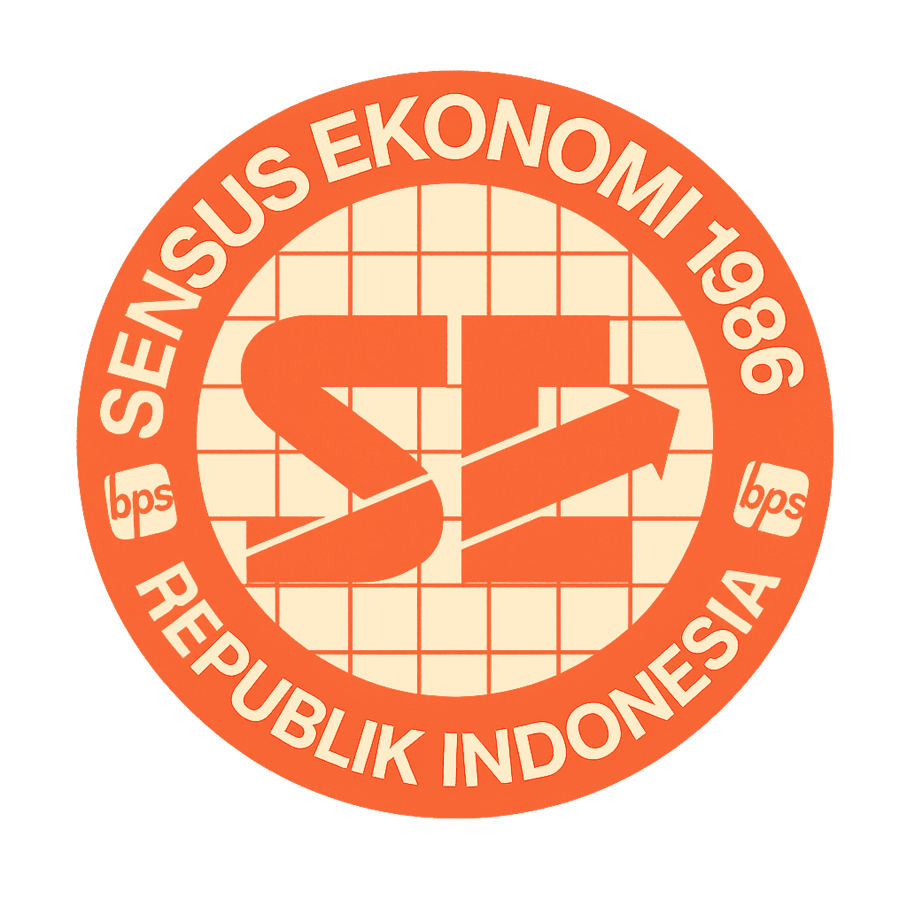
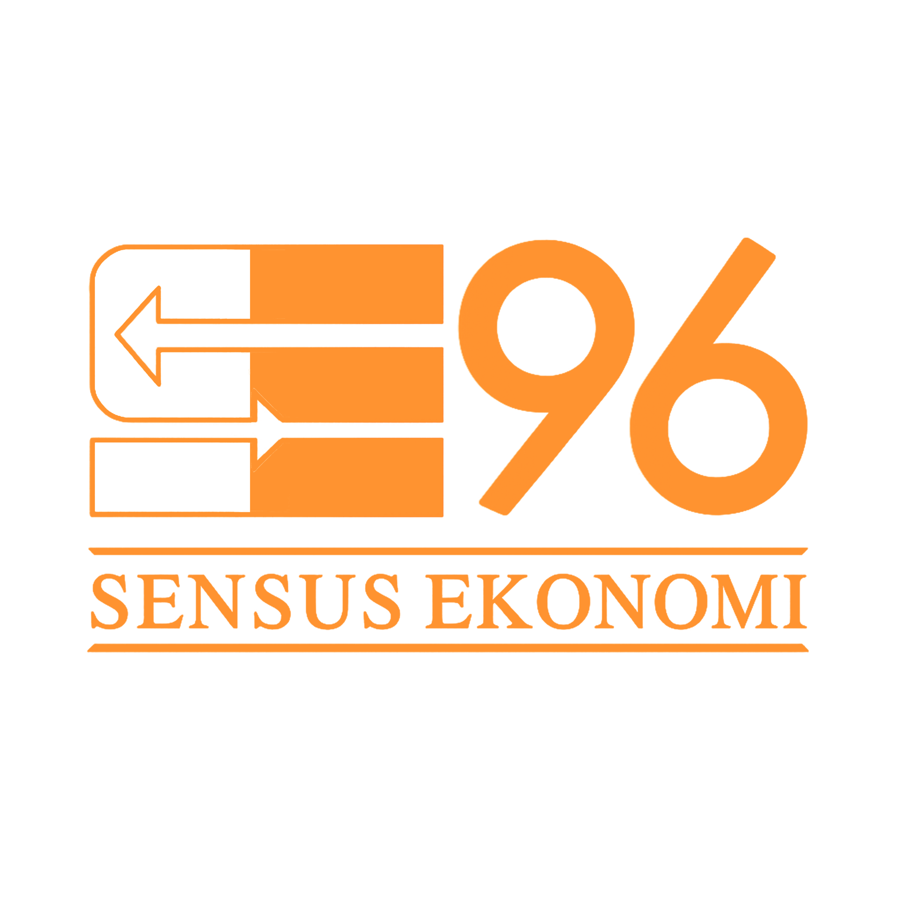
Sensus ini merupakan pengembangan dari Sensus Ekonomi 1986 yang bertujuan untuk mendukung pelaksanaan Pembangunan Jangka Panjang Kedua (JPK II) serta mencakup sektor pertambangan dan penggalian, industri, listrik, gas, dan air, konstruksi, perdagangan, transportasi, lembaga keuangan, serta berbagai sektor jasa.
Kegiatan ini berperan menangkap kondisi perekonomian di Indonesia setelah krisis ekonomi tahun 1997. Pendataan ini tidak mencakup sektor pertanian (Kategori A dan B) serta sektor administrasi pemerintahan, pertahanan, dan jaminan sosial wajib (Kategori L).
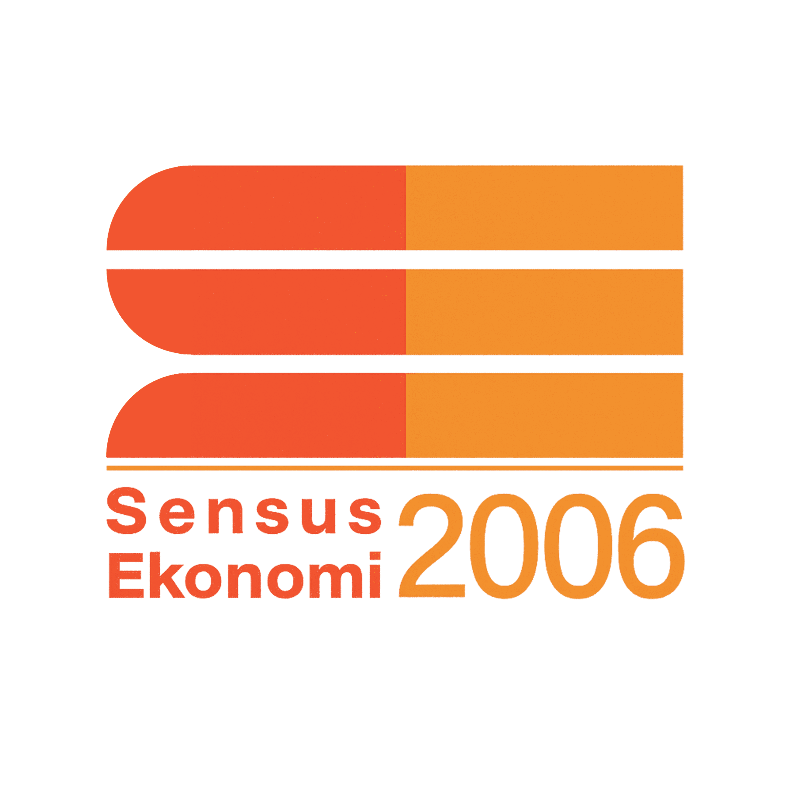
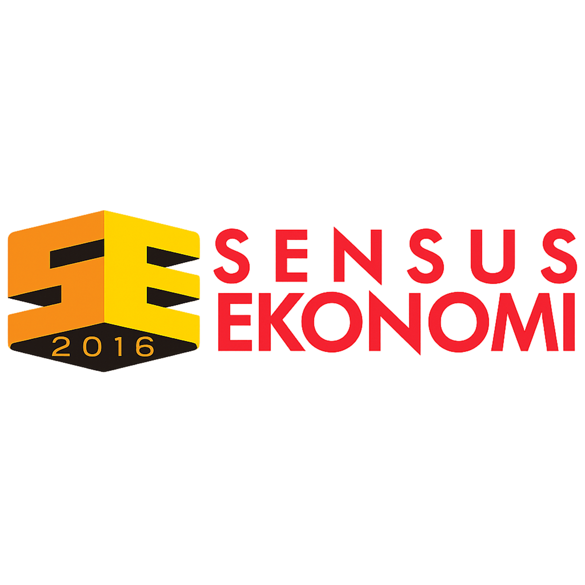
Sensus ini dilaksanakan untuk memperoleh gambaran perekonomian Indonesia berdasarkan wilayah, jenis lapangan usaha, serta skala usaha. Kegiatan ini tidak mencakup sektor pertanian, kehutanan, dan perikanan (Kategori A); administrasi pemerintahan, pertahanan, dan jaminan sosial wajib (Kategori O); kegiatan rumah tangga sebagai pemberi kerja; serta kegiatan rumah tangga yang menghasilkan barang dan jasa untuk memenuhi kebutuhan sendiri (Kategori T).
Sensus ini merupakan Sensus Ekonomi (SE) kelima yang dilakukan oleh BPS. Kegiatan ini menyediakan informasi struktur ekonomi, karakteristik usaha serta informasi ekonomi digital dan lingkungan. Sensus ini akan menjawab beberapa isu penting seperti daya saing usaha, peta perekonomian wilayah, dan kontribusi UMKM.
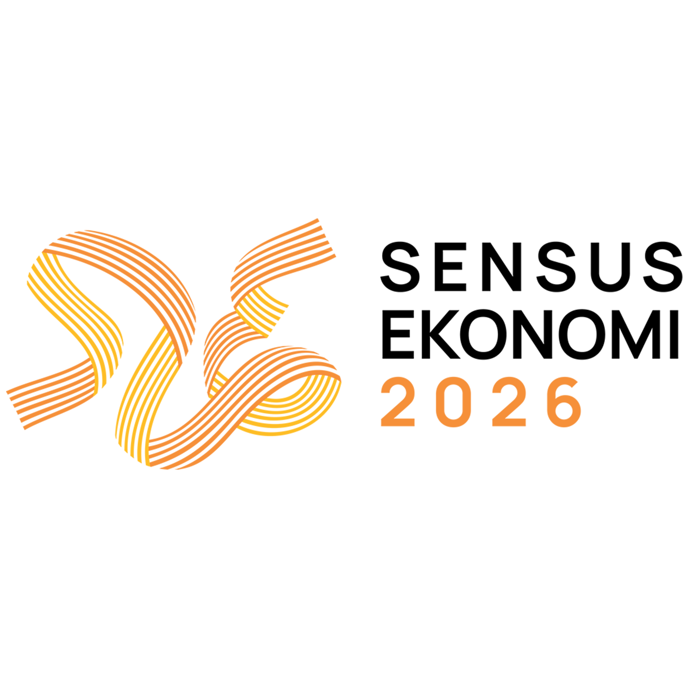
Dukungan Pemerintah Daerah
Sensus Ekonomi 2026
Publisitas Sensus Ekonomi 2026
Kabupaten Sijunjung
Kegiatan Sosialisasi Sensus Ekonomi
TIM SENSUS EKONOMI 2026
Kabupaten Sijunjung
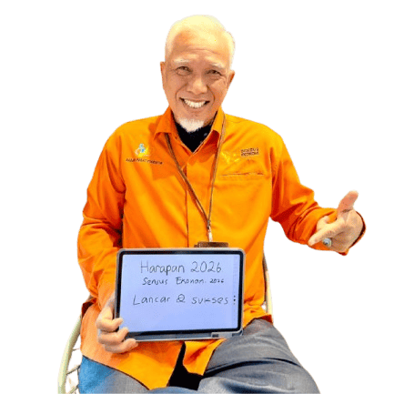
Yuliandri, SE
Penanggung Jawab
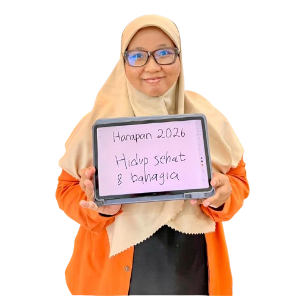
Ade Ayu Rahmadani Nasution, S.Si
Ketua Tim Pelaksana SE 2026
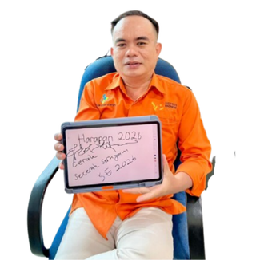
Azmen, S.Si
Wakil Ketua Bidang Teknis Pendataan dan Pelaksanaan Lapangan
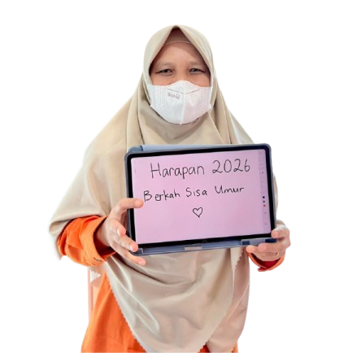
Yezi Ostanofa, SE
Wakil Ketua Bidang Administrasi, Hubungan Masyarakat, dan Manajemen Risiko
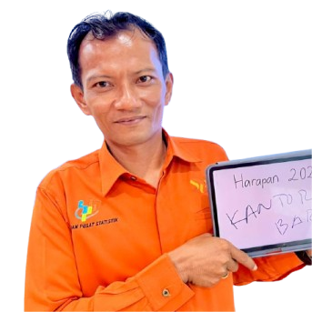
Proknayco Arsenal, SE
Wakil Ketua Bidang Pengolahan, Teknologi Informasi, dan Diseminasi
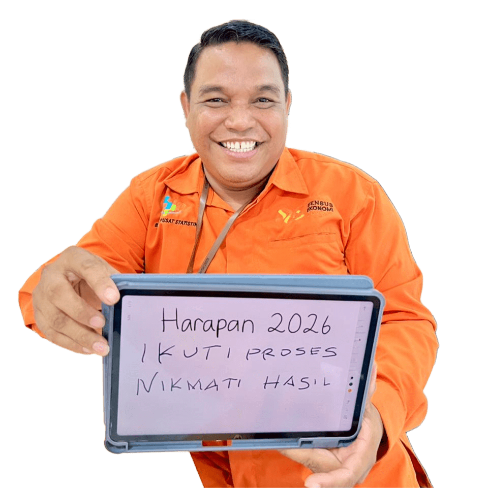
Akhirumin, S.M
Wakil Ketua Bidang Analisis dan Kualitas Data
Tim Sensus Ekonomi 2026 Kabupaten Sijunjung berkomitmen untuk melaksanakan pendataan secara profesional, akurat, dan berintegritas.